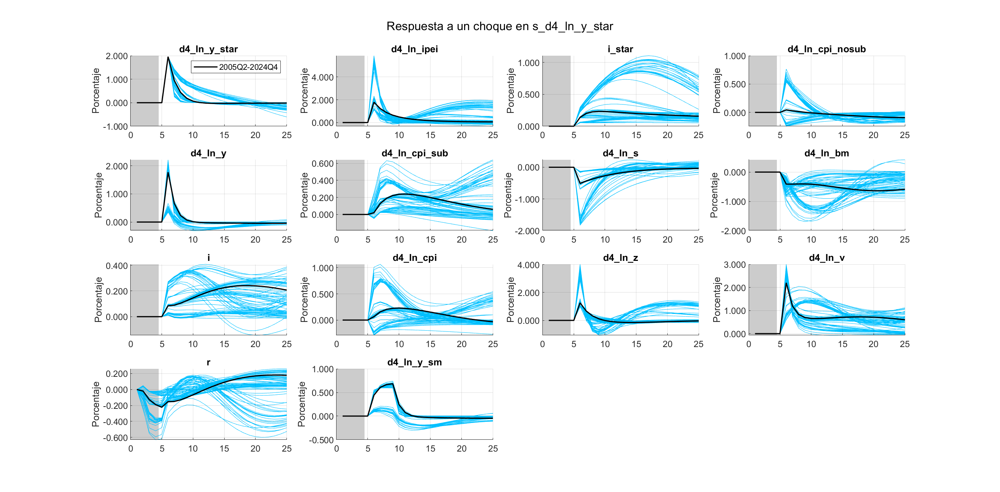
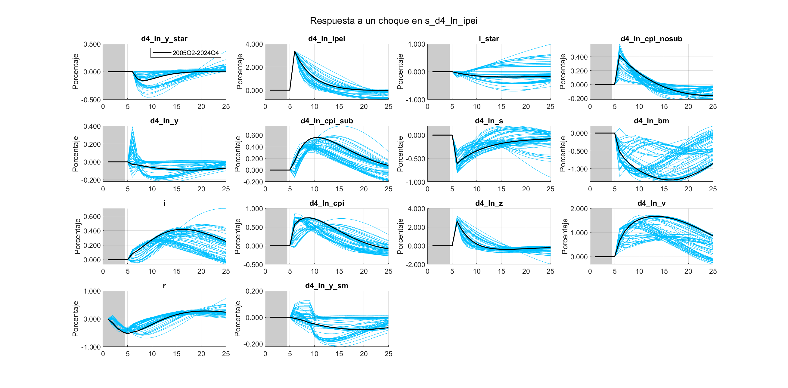
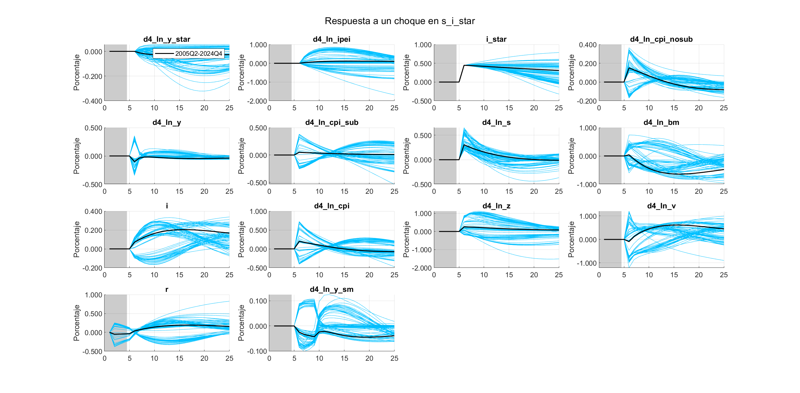
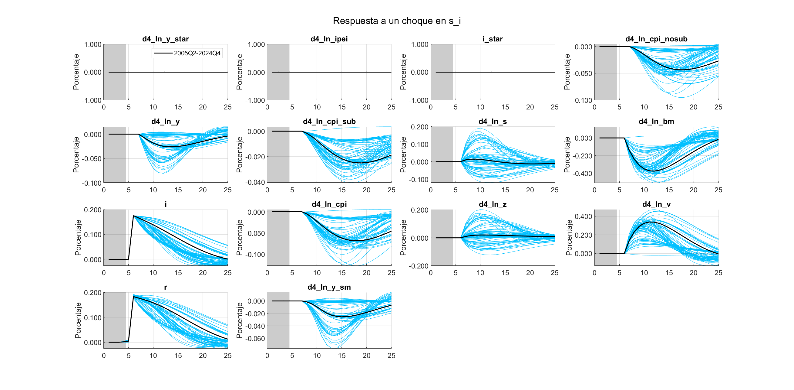

Comparación entre el modelo SVAR504B y SVAR52
Introducción
El objetivo de este documento es analizar concretamente los principales resultados de comparar el modelo SVAR50_4B y una variación del modelo con una matriz de restricción diferente, donde no hay restricciones en la submatriz que relacionan las variables de Estados Unidos, (SVAR52).
Variables Endógenas
Las especificaciones generales para ambos modelos son que, la realización de la evaluación es fuera de muestra. Las fechas con las que se modeló van desde 2005Q1 hasta 2024Q4. Ambos modelos cuentan con las siguientes variables endógenas y con el mismo ordenamiento:
- Tasa de Variación Interanual del PIB de EEUU:
d4_ln_y_star - Tasa de Variación Interanual del Índice de Precios de Transables:
d4_ln_ipei - Tasa de Interes de fondos federales:
i_star - Inflacion No Subyacente Interanual:
d4_ln_cpi_nosub - Tasa de Variación Interanual del PIB de Guatemala:
d4_ln_y - Inflación Subyacente Optima MSE Interanual:
d4_ln_cpi_sub - Tasa de Variación Interanual del Tipo de Cambio Nominal:
d4_ln_s - Tasa de Variación Interanual de la Base Monetaria:
d4_ln_bm - Tasa de Interes Lider de Politica Monetaria:
i
Variables objetivo:
- Tasa de Variación Interanual del PIB de Guatemala:
d4_ln_y - Inflación Subyacente Optima MSE Interanual:
d4_ln_cpi_sub - Tasa de Variación Interanual del Tipo de Cambio Nominal:
d4_ln_s - Tasa de Interes Lider de Politica Monetaria:
i
Matriz de restricción del SVAR50_4B
La principal distinción entre modelos es la matriz de restricciones para el modelo SVAR50_4B es \[ \begin{pmatrix} NaN& NaN&0 & 0& 0& 0& 0& 0& 0& 0\\ NaN& 0& NaN& 0& 0& 0& 0& 0& 0& 0\\ NaN& 0& 0& NaN& 0& 0& 0& 0& 0& 0\\ NaN& 0& 0& 0& NaN& 0& 0& 0& NaN& 0\\ NaN& 0& 0& 0& 0& NaN& 0& 0& NaN& 0\\ NaN& 0& NaN& 0& 0& 0& 0.9& 0& NaN& 0\\ NaN& 0& 0& 0& 0& 0& 0& NaN& NaN& NaN\\ NaN& 0& 0& 0& NaN& 0& 0& 0& NaN& NaN\\ NaN& 0& 0& NaN& NaN& 0& NaN& 0& NaN& NaN\\ \end{pmatrix} \]
Matriz de restricción del SVAR52
Mientras que para el SVAR52 es \[ \begin{pmatrix} NaN& NaN& NaN & NaN & 0& 0& 0& 0& 0& 0\\ NaN& NaN& NaN & NaN & 0& 0& 0& 0& 0& 0\\ NaN& NaN& NaN & NaN & 0& 0& 0& 0& 0& 0\\ NaN& 0& 0& 0& NaN& 0& 0& 0& NaN& 0\\ NaN& 0& 0& 0& 0& NaN& 0& 0& NaN& 0\\ NaN& 0& NaN& 0& 0& 0& 0.9& 0& NaN& 0\\ NaN& 0& 0& 0& 0& 0& 0& NaN& NaN& NaN\\ NaN& 0& 0& 0& NaN& 0& 0& 0& NaN& NaN\\ NaN& 0& 0& NaN& NaN& 0& NaN& 0& NaN& NaN\\ \end{pmatrix} \]
Capacidad explicativa
El promedio acumulada del coeficiente de variación de las variables objetivo, resulta ser menor en el modelo SVAR50_4B, en todos los horizontes:


Capacidad predictiva
La función de perdida utilizada para medir la magnitud promedio de los errores de predicción es el RMSE de los errores en las submuestras por horizonte de las variable objetivo.
Cocientes entre modelos
Para comparar los resultados predictivos de ambos modelos se realiza un cociente de los resultados del SVAR52 entre los resultados del SVAR50_4B, por horizonte de cada una de las variables. Se espera que el cociente sea mayor a 1, cuando los errores del SVAR50_4B sean menores que los que se obtienen en el SVAR52.
| Periodos | Cociente d4_ln_cpi | Cociente d4_ln_s | Cociente d4_ln_y_sm | Cociente i |
|---|---|---|---|---|
| 1 | 0.976535157 | 0.999629858 | 1.005898396 | 0.969602229 |
| 2 | 0.999653774 | 1.002390557 | 1.003742315 | 0.971788686 |
| 3 | 1.032648221 | 1.00795756 | 1.002363462 | 0.982181049 |
| 4 | 1.067476241 | 1.017116795 | 1.00180524 | 0.999068988 |
| 5 | 1.093996465 | 1.028085084 | 1.005809254 | 1.020216075 |
| 6 | 1.097090618 | 1.039899372 | 1.01287104 | 1.043464953 |
| 7 | 1.082699403 | 1.049351083 | 1.019361463 | 1.064621313 |
| 8 | 1.054512183 | 1.052915798 | 1.021956182 | 1.081208548 |
| 9 | 1.026928722 | 1.050997267 | 1.021525416 | 1.085502937 |
| 10 | 1.014254736 | 1.044706504 | 1.022104374 | 1.083003673 |
| 11 | 1.008415416 | 1.042832934 | 1.023292229 | 1.078236423 |
| 12 | 1.000539426 | 1.04699611 | 1.023183054 | 1.068107965 |
Cocientes promedios de los modelos
Los cocientes de los RMSE de las variables objetivo entre los modelos son en la mayoría de los periodos es mayor a la unidad excepto en los primeros dos periodos. Lo que indica que en ese periodo la medida del error es menor en el SVAR52.
| Periodos | Cociente Promedios | Promedio de los cocientes |
|---|---|---|
| 1 | 0.99047739 | 0.98791641 |
| 2 | 0.998880318 | 0.994393833 |
| 3 | 1.011748211 | 1.006287573 |
| 4 | 1.027007668 | 1.021366816 |
| 5 | 1.042244972 | 1.037026719 |
| 6 | 1.052092912 | 1.048331496 |
| 7 | 1.055493631 | 1.054008315 |
| 8 | 1.050727799 | 1.052648178 |
| 9 | 1.041985186 | 1.046238585 |
| 10 | 1.035874262 | 1.041017322 |
| 11 | 1.033275026 | 1.038194251 |
| 12 | 1.031032977 | 1.034706639 |
En ambos promedios, el RMSE en los primeros periodos el SVAR50_4B es ligeramente mayor. Aunque la desviaciones de error de ambos modelos quedan contenidos (ver Figure 2) y luego empieza a ser menor que el del SVAR52.
Las funciones impulso respuesta de las variables respecto a cada uno de los choques, en el modelo SVAR52
Choque en crecimiento externo
Figure 3: Choque en crecimiento externo
Choque en precios de los transables
Figure 4: Choque en precios de los transables
Choque en la tasa de interés externa
Choque en la tasa de interés externa
Choque en la inflación no subyacente

Figure 5: Choque en la inflación no subyacente
Choque en crecimiento doméstico

Figure 6: Choque en crecimiento doméstico
Choque en la inlfación subyacente

Figure 7: Choque en la inlfación subyacente
Choque en el tipo de cambio nominal

Figure 8: Choque en el tipo de cambio nominal
Choque en la base monetaria

Figure 9: Choque en la base monetaria
Choque en la tasa
Figure 10: Choque en la tasa